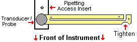
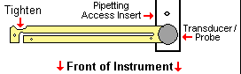

This procedure describes how to remove a reagent pipettor probe and install a replacement reagent pipettor probe.
Required Materials:
Pipettor probe torque tool
Remove a reagent pipettor probe and install a replacement reagent pipettor probe when a probe is being replaced or as part of the preventive maintenance procedure.
Open the upper left and right front covers.
Insert an interlock bypass.
Drain the tubing.
From the
Main Menu, select
Diagnostics > Device Diagnostics > Digital Devices
> Peristaltic and Vacuum Pumps.
Enable the vacuum pump for the pipettor being serviced.
Verify that the pipettor is directly over the wash tower.
Remove the fitting from the pipettor precision pump and allow the wash buffer to drain into the wash tower.
Caution: When draining wash buffer from the tubing, do not let fluid leak onto the instrument or any of the instrument components. When disconnecting the tubing, hold a dry towel at the in-line fitting.
After the tubing is drained, disable the vacuum pump and exit the
Digital Devices screen.
Remove the interlock bypass.
Remove power from the motors by using the switch on the Power Distribution PCB labeled "All DC power (except CPU and reagent coolers)".
Remove the reagent pipettor probe.
Manually move the pipettor carriage fully forward.
Move the probe down into the front reagent pipetting hole to gain better access to the probe nut.
Hold the transducer horn with a 5/16-in wrench, and loosen the probe nut with a 1/4-in wrench.
Caution: To prevent damage to the transducer and ultrasonic adjustment failures, do not allow the transducer horn to rotate.
Remove the probe and nut from the transducer.
Install the reagent pipettor probe.
Manually thread the probe nut onto the transducer until finger-tight.
Place the torque wrench over the front hole in the reagent pipetting position nest.
Note: Positioning the tool at a 45-degree angle to the front of the instrument allows more room for tightening.
If the probe is being replaced on reagent pipettors 1 or 2, position the torque wrench on the right side of the probe with the shorter end toward the rear of the instrument.
If the probe is being replaced on reagent pipettors 3 or 4 (DxI 800 instruments only), position the torque wrench on the left side of the probe with the shorter end toward the front of the instrument.
Manually move the pipettor probe forward and down until the probe nut fits in the hexagonal opening in the tool.
Hold the transducer horn stable with a 5/16-in wrench.
Tighten the probe nut.
If the probe is being replaced on reagent pipettors 1 or 2, tighten the probe nut using the torque wrench. Push the torque wrench towards the rear until the two inner surfaces touch.

If the probe is being replaced on reagent pipettors 3 or 4 (DxI 800 instruments only), tighten the probe nut using the torque wrench. Pull the torque wrench towards the front until the two inner surfaces touch.

Manually raise and return the reagent pipettors to the wash towers, and remove the torque wrench.
Insert the interlock bypass.
Restore power to the motors by using the switch on the Power Distribution PCB labeled "All DC power (except CPU and reagent coolers)".
Initialize the instrument.
Verify the proper operation of any probe that was replaced.
Confirm the reagent pipettor alignments to all intersecting devices. Adjust and align as needed.
Prime the reagent pipettor 10 times, and monitor for leaks.
Select
Diagnostics > Device Diagnostics
> Analog Devices > Sensor Calibration
> Pressure, and then calibrate the pressure monitoring for each probe that has been replaced.
Remove the interlock bypasses, close the instrument covers, and initialize the system.
Perform System Check and verify that all specifications are met. See
Verification of Service Repair for more information.